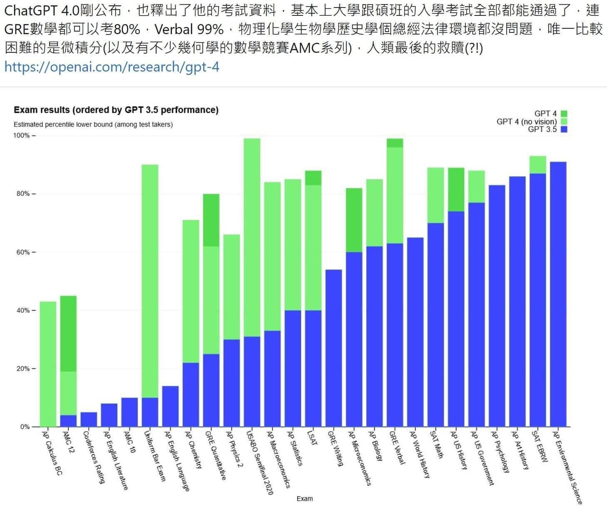

從ChatGPT的數學能力測試談起～為何獵豹推薦AMC、微積分？！
柯文哲：五年後 那些不用動手的醫師都有被AI取代的風險！
ChatGPT 的橫空出世，震撼了全球！
年初它的3.5版儘管在許多方面的能力把大家的下巴震掉了，但在數學方面的弱智表現卻飽受嘲笑，沒想到兩個月後4.0版透過插件與數學神網Wolfram Alpha結合，靠著強大的數學軟件Mathematica（從雞兔問題 到量子力學 廣義相對論都能計算）底層運算和數據處理，數理能力一飛沖天！！
OPEN AI 公布ChatGPT4.0測試各種美國高中競賽與大學、碩士入學考試結果顯示它在許多科目已經足以挑戰人類！（見下圖）
【例如】
在SAT(美國學測）的Pr值，數學逼近90%，而英文已超越90%！
在AP（大學先修課程）裡，許多科目都超過90%，物理、化學也都超過60%！
GRE(研究生入學考試）逼近80%，單字則幾乎99%！
令人驚訝的是ChatGPT在美國奧林匹亞生物競賽的表現，幾乎可以媲美國手！
那ChatGPT 4.0在華人地區的考試表現如何呢？
我們拿難度較高的中國大陸高考（大學聯考）試題來比較，試題選的是2023年全國新高考Ⅰ卷（適用範圍包括湖北、山東、廣東、江蘇、河北、湖南、福建、浙江等地的考生）
因為ChatGPT目前還無法處理圖表信息（在不久的未來，新版本將導入視覺模型）因此考卷第10題和第18題不讓ChatGPT進行解答。
扣除第10題（5分）和第18題（12分），整套試卷滿分為133分，結果ChatGPT得分高達112分。
ChatGPT是以英文數據為主的大模型，更擅長解決英文問題。
未來隨著中文資料庫的擴大及視覺模型的導入，整套試卷為150分時，ChatGPT獲得的分數往上提升10分，應是合理期待。
那麼按照數學成績來看如果在廣州，應是可以考取中山大學的水平；如果是在江蘇，則可以考上南京大學的水平；如果在福建，則可以錄取廈門大學。
如果在山東，則可以上山東大學；
如果在浙江，或許可以衝一下浙江大學（中國排名第五）！
以上都是中國的985頂大（中國一共有39所大學）
而AI在哪些數學項目的表現不如人類呢？
從之前提到的統計的長條圖可看出 3.5版在AMC 與微積分的表現是弱智狀態，加入Wolfram Plug-in 雖有明顯提升，但還是在50% 以下。
獵豹教學團隊中有好幾位老師的博士研究正好是AI領域
（大維老師是大數據、資料處理；青勻老師是量子運算；朱安強老師是演算法；呂彥儒老師是語音處理；華祥志老師是訊號處理；Tim老師是電腦視覺），因此ChatGPT是我們近期很關注的話題,也對它的數學解題與分析能力做了不少測試
（收費的4.0版）。
我們拿近幾年的AMC10考題做測試，結果顯示它在P15以前的表現很不錯。
但在深水區P20-25,表現得十分差勁，常常完全是一題也解不出！
以題型來看，它在解方程式或化簡算式類的能力很強，但在組合學與博弈策略表現最糟。
跟人類的表現類似,越是屬於「倚重知識的制式題型、套路算法」，AI的表現就越好。
越是需要「綜合、整合、抽象能力」的題型，AI的表現就越糟。
我們對ChatGPT提問：請證明「根號2」為無理數。
一期如預期，它馬上提供了正確答案。（這題目在網路上有許多現成的文本）
然後我們把數據增加一些複雜度：請證明「根號24」為無理數。
它竟會使用2 x根號6 來論述：非零有理數x無理數=無理數 論證。
我們關掉原來對話，重新提問，它也會仿造根號2的歸謬證法（令其為q/p….),但中間出了一些錯誤，我們使用自然語言像糾正一個孩子的方式提出質疑，它竟也表現得跟一個聰明學生一樣地修正了錯誤（呵呵 可以通過圖靈測試）。
但當我們把問題改成 「請證明：根號24的在七進位的展式為不循環的無窮小數」
ChatGPT 就變成一個嚴肅的胡言亂語傢伙，完全不可理喻了。
這個提問雖然跟之前的命題其實完全等價（無理數在任何進位制都是不循環的無窮小數），但因為涉及了幾個觀念的整合與轉移，Wolfram Alpha目前 的演算法還遠遠無能為力…
對於這些測試的成果，帶給我們那些提醒與與啟示呢？
1. 抽象且嚴謹的推理能力、整合與創新的數學能力，是人類的專長，而是目前以「大數據與機率」方式來「思考」的AI望塵莫及的。
2. 越是需要整合不同知識與跨領域的能力，AI的表現就越糟。
3. 只投資孩子的教育在AI擅長的領域（記憶、制式、套路..），無疑地將在未來的社會中被邊緣化或淘汰！（發明計算器之後還非常努力訓練珠算技巧，似乎不太明智）
正確的選擇比努力更重要！
4. 許多家長問獵豹，AMC的教學與一般的數學課程有何差異？
一般的數學教學，是以知識點來架構學習（多項式、三角函數、向量…）
而AMC是以科學方法、分析能力與思維模式來建構學習（歸納、演繹、對稱性、極端化⋯⋯）
從對ChatGPT的測試，我們看得很清楚 前者是AI的專長，而後者是人類的特質，也是主宰AI的能力所在！
【後記】
這次AI掀起的產業革命 ，與以往不同的，對工作崗位最大的衝擊目標群 不是藍領階級，而是高學歷的白領階級！
國際著名的管理諮詢公司「麥肯錫」發佈了的一份題為《生成式人工智能的經濟潛力》的研究報告，在報告中，分析師們通過對47個國家及地區的850種職業（全球80%以上勞動人口）的研究，探討了在AI成指數級發展背後，對全球經濟將帶來的影響，哪些行業衝擊最大，哪些人面臨失業威脅？
節錄報告主要內容：
1. 在2030年至2060年間50%的職業逐步將被AI取代。
2. 全局上看AI對各行各業的發展有利，但是對個人不利。
而高薪、高學歷的腦力勞動者受到的衝擊最大！！
3. 生成式AI帶來的價值增長，主要（約75%）集中在四個領域：
客戶運營
營銷和銷售
軟件工程
研發
這也意味著四項業務受生成式AI影響最大。
4. 生成式人AI及其他科技的發展或將使當前工作的60%到70%實現自動化。
其中，諮詢、顧問、銀行業、高科技行業和生命科學等行業所受的影響最大！！
